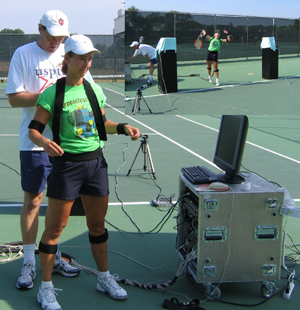
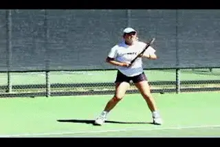
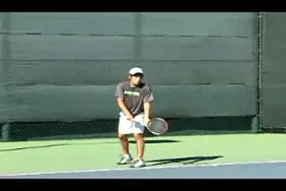
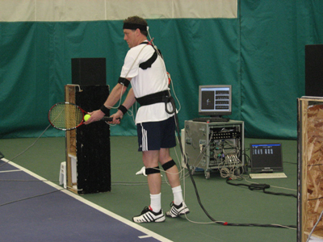
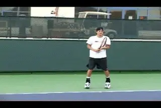
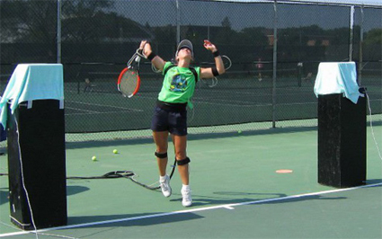
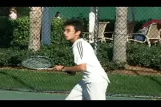
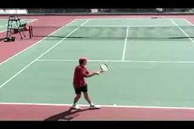

3D Technologies and Analysis - an Introduction
Comprehensive unified tennis knowledge base — Fundamentals, Stroke Analysis, Reference Library, and more
3D Technologies and Analysis:
An Introduction
Dr. Brian Gordon

3D quantitative analysis: the leap from interpretation to physics.
The world of tennis is becoming more technically advanced. From stroke analysis, to player preparation, to performance evaluation, progressive coaches and players are using an array of innovations and increased expertise to get results.
Perhaps the biggest advances have been made in the stroke visualization and interpretation realm. This comes as no surprise to subscribers to Tennisplayer, as the use of video, and video editing software, combined with intense study and description of touring pro technique has led to continuing revolutions of understanding.
In these articles, I want to introduce an entirely new level of analysis that is now becoming available for players: 3D biomechanical analysis. Many coaches, including John Yandell, have referred to this as the "holy grail" of stroke analysis.
With this new technology, measurements can be made of players that produce a 3-D mapping of the body in motion. Once the movements are mapped, we can quantify stroke production, and shift analysis away from the use of imagery and interpretation directly into the world of physics and biology.

3D mapping allows us to shift from stroke interpretation to physics.
Coaches and players armed with this information, and the willingness to think in more abstract terms, can gain incredible insight into an individual's technique, but more importantly attain a far higher level of understanding of tennis stroke mechanics in general.
This may sound like a theory spawned in the halls of academia, and that is certainly true. For years a handful of researchers have used various filming and analysis methods to try to quantify the strokes in tennis. But these results have been published primarily in academic journals, with very few exceptions. (Click Here to some of my previous work on the serve available on Tennisplayer.)
Previously, the complexity and labor intensive nature of the process made 3D analysis impossible to use in hands on coaching. That is what is now changing, with the introduction of a different kind measurement and analysis system at our training facilities in Cincinnati.

Junior players can identify root problems not just symptoms.
Hands On Breakthrough
Unlike previous work which required manual digitization of hundreds if not thousands of video frames, our system generates immediate quantitative data. We can then share this with players and coaches in the time frame of a single day.
For example, recording the data on court using our system takes only 30 minutes, followed by another 30 minutes for the completion of the computer software analysis.
At that point, we can sit down and do the stroke analysis. At the same time we can train the coach and/or player or parent in how to understand and use the data. The result is that the player can benefit from this new knowledge in his on court work every day.
Coaches who have had their players analyzed in this fashion report that their students progress much more quickly. This is because they can easily identify the root causes of problems, rather than addressing symptoms through the process of elimination.

The approach that more players and coaches will use over time.
Another consequence has been that many career coaches have changed their approach to teaching. This is due to a much deeper understanding of the interaction between the human body and the demands of tennis, gained from exposure to our data and analysis of their players.
A Beginning Only
I believe that this is just the start, and that as awareness grows, more and more coaches and players will become interested in approaching stroke mechanics in a similar way.
There is a potential here to profoundly affect the way the sport is taught and coached over upcoming generations. In these articles, I want to help players at all levels understand this process.
Direct Access
To explain how it all works, I will be presenting 3D measurement results taken from actual players at our training centers. To start we will begin with the analysis of the serve.
This is the same presentation our coaches use on a daily basis. The graphic interface shown below with this article ties you directly to the databases and analysis protocols on our website. As a Tennsiplayer subscriber, you will be among the very few students of tennis in the world who have access to the online analysis tools and database available to our clients who come directly to our training center.

Our quantified analysis presents 50 parameters of understanding per stroke.
Every month, starting with the next issue of Tennisplayer, I will systematically address one of individual components in this measurement presentation.
This will take some time and patience as we work through the mechanical interpretation of all of the information presented. This is because I present roughly 50 analysis parameters for each stroke. The payoff however will be an entirely new level of understanding of stroke mechanics.
Even though we will address the parameters one by one, subscribers will still have access to all the information through the interface and can "work ahead" if they wish. So the adventurous have the opportunity to research all aspects of our system and even construct their own theories of what the data means before I address them formally myself. Time spent doing so, I believe, will increase your understanding beyond what you can imagine, and I wouldn't be surprised to see some of these insights posted in the Forum.
This month we are going to give an overview the technology, and show how it relates to the analysis of the serve. Next month I will begin to break down the nuts and bolts of all the elements of the service motion in the analytic presentation. I'm hoping you'll enjoy this voyage into the unknown and will benefit from this first real look into real time 3D tennis data.

The capture technology allows players to adjust and hit their normal strokes.
The Data Presentation
Several technologies exist to measure motion in 3-D. As a researcher for the last ten years, I've seen and/or used all of them, and there are benefits and detriments to each. Readers should understand that all technologies are prone to some error. It is the job of the biomechanist to keep this error within tolerable levels.
The measurements for this presentation were made with magnetic sensor technology which records at 125 frames/second. For real time analysis this system offers by far the best current application in terms of speed and ease of use.
Magnetic sensor technology requires that the players wear sensors which are attached to computers through a series of cables. The system is somewhat restrictive since it won't allow for actual point play or movement for full court coverage. However most players adapt to the system and are able to reproduce their natural strokes relatively easily in a short period. The advantage is the rapid generation of the analysis, a matter of hours, as opposed to literally months with some video or film based systems.
After the data is captured on the court, our custom software goes through a detailed processing and calculation process to produce the results you see on the interface. Although there is a tremendous wealth of possible information, the analysis interface presented here includes the elements that I've found to be most useful in stroke production assessment.
To help you understand how to access them, let's go over how the interface with our website works, and what it is capable of displaying.
Controller
The controller is located in the left margin. The controller guides the animation either forward or back. Playback can be either continuous or a frame by frame, using the buttons. This similar to regular video players such as Quick Time. Using the controller in this fashion plays the stick figures, but simultaneously, it plays the graph tracking bar, and line graph values as explained below.
Stick Figure Graphics
The stick figure graphics give three views of the stroke. These are pure side (left), pure back (center), and pure overhead (right). The path of the racquet head tip can be turned on by clicking the "Path" button in each view. Through observation of this path over time, many errors can be identified. The exact cause can be verified through the examination of the supporting data as explained below.
Data Options
Selection of a "Data Option" item in the left margin will generate a graphical display. This display consists of bar graphs, line graphs, or table values (or a combination thereof). These allow you to follow the 9 dimensions of the analysis. In the case of line graphs, a yellow tracker synchronizes the graph with the stick figure and reports the values at any point in the motion. The graph legend is color coded and clicking an item will turn its line on or off in the graph.

The interface give players and coaches 9 dimensions of stroke analysis.
The following 9 dimensions of analysis are accessible through this display:
1. Compare Trials -- this allows direct comparison with results of previous measurement sessions. We have big plans for this -- stay tuned.
2. Stroke Phase Statistics -- a temporal description of the swing phases.
3. Racquet Path Data -- descriptive data for the racquet path including key measurements.
4. Segment/Joint Angles -- display and measurement of body positions at key instants of the stroke.
5. Racquet Speed Data -- measurement of racquet velocities and overall speed.
6. Segment Contributions -- measurement of the contribution key joint and segment rotations make to the racquet speed over the course of the stroke.
7. Leg and Trunk Data -- measurement of hip and upper trunk rotation speed, angles, and the leg action used to drive trunk rotation.
8. Angular Momentum -- measurement of body and segment rotation, creation of that rotation, and use of the rotation in racquet speed acquisition.
9. Hand Path and Hitting Arm (ground strokes only) -- measurements of hand path attributes and hitting arm muscular conditions.

Goal values are now based on Division 1 players and are always evolving.
Goal Values
A key question is how to evaluate the data for a given player by comparison to certain goals for each phase or aspect for the stroke. The goal values presented on the interface are my best estimate (at this time) of the most mechanically advantageous values for a given item. These values were initially set from composites (averages) of several Division I college players. They are then constantly adjusted based on results of ongoing research and the accumulation of more data.
So that's the overview of how the system works. In the upcoming articles we will dive in and start to look at the serves of actual players, what the measurements show, and how they compare to the goal values. In the process we will (hopefully) increase everyone's understanding of how the body works in producing tennis strokes, and how to improve the movements and sequence of movements based on the analysis. Stay Tuned.

Dr. Brian Gordon has changed the understanding of the biomechanics of high level tennis technique. His Biomechanically Engineered Stroke Technique (BEST) is the only empirically based stroke mechanics system in the world, growing from three decades of both academic and applied on court research. He is a founder of the Tennis Center for Performance Research in Miami, Florida, which is creating a new paradigm for player development. The center has assembled an unprecedented group of specialists with cutting edge knowledge across the entire range of tennis performance.
To visit his website, Click Here!
Top contact him directly, Click Here!
Source: tennisplayer.net archive — 3D Technologies and Analysis - an Introduction.docx (John Yandell teaching library, 2002-2022). Extracted and rendered as HTML for Tennis Future Lab.